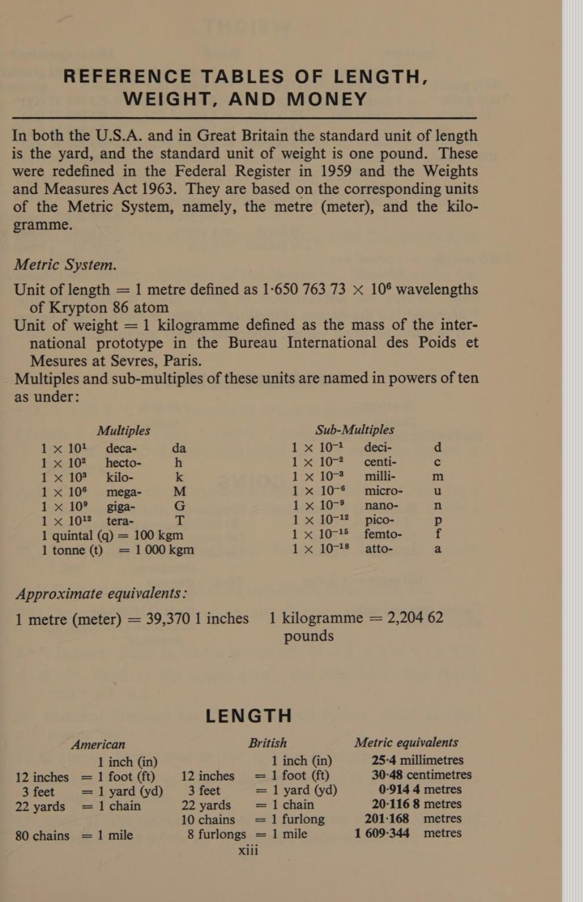
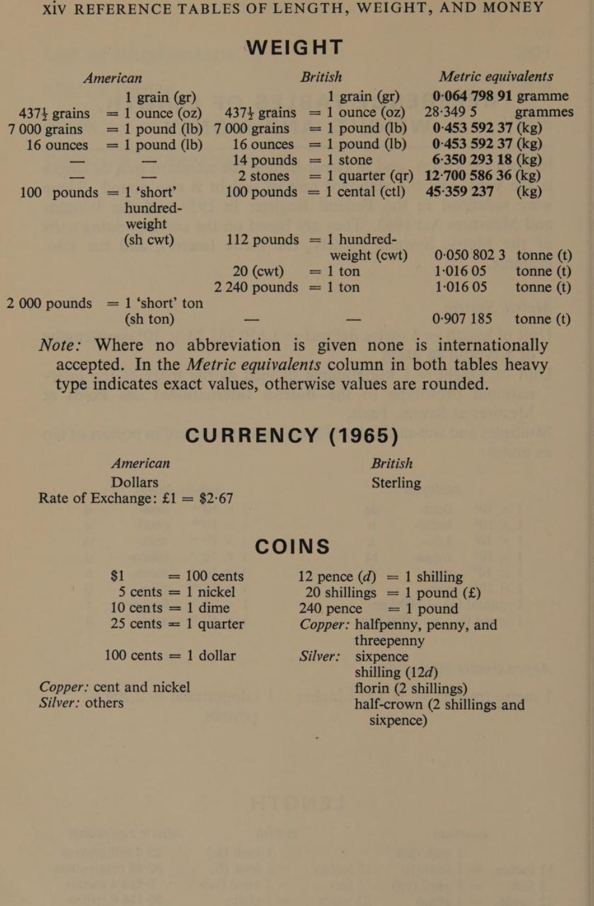
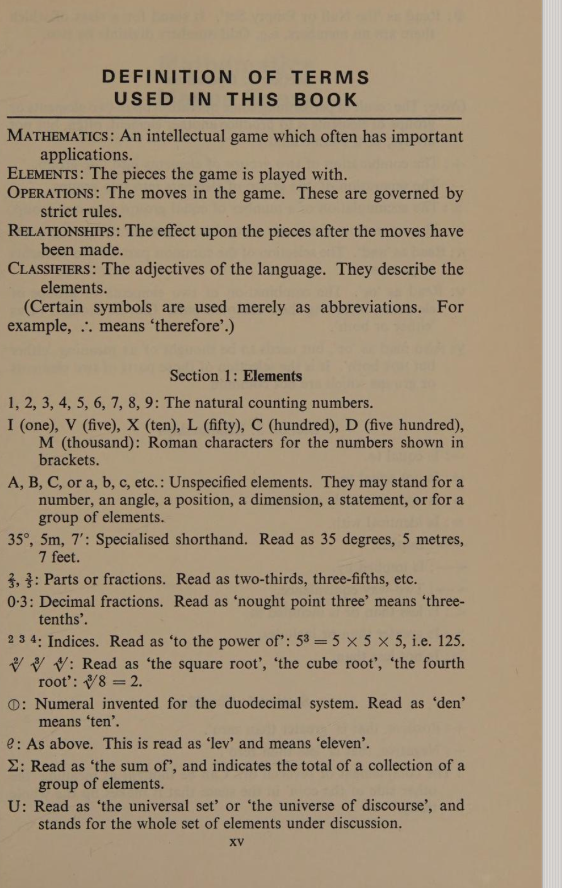
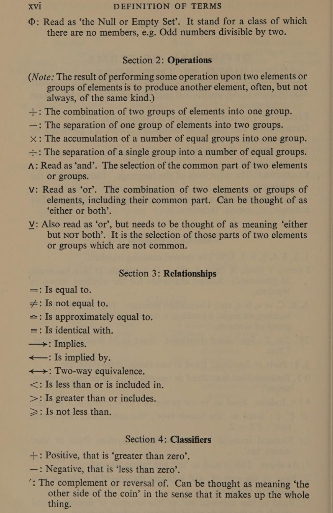

Front matter
Title, Preface & Reference
Mathematics Makes Sense
An introduction to propositional algebra
by W. D. Lewis
Head of the Mathematics Department,
West Borough County Secondary School, Maidstone
Arco Publishing Company, Inc., New York
© W. D. Lewis 1966 · Printed in Great Britain
Library of Congress Catalog Card Number: 66–21185
Preface
This book should be read as a continuous narrative. Its purpose is to present mathematics not as a rigid discipline for the professional only but as a cultural heritage to be appreciated by all. For this I have selected some of the topics loosely described nowadays as ‘modern mathematics’ and have presented them simply as descriptions of relationships which, when expressed in words, can easily be understood.
Although linked by a common theme, each chapter is self-contained and is provided with a set of review questions matched to the numbered paragraphs. The book is fully indexed alphabetically and so referenced that any diagram or illustration may easily be found. A set of answers is provided by means of which the success of the text as a teaching medium may be measured.
The great triumph of the twentieth century will be that the excitement of scientific discovery was not hoarded by an elite but was shared by all, and in order that all may appreciate the significance of this technological age and benefit fully from this dissemination of knowledge the means of communication between the mathematician and the community he serves must be extended. This means that mathematics will have to become more popular and, in my view, will need to be presented as a cultural rather than a technical study in elementary education. In other words, it will require a shift of emphasis from an insistence upon a wholesale proficiency in its techniques to a more liberal appreciation of the nature of mathematical ideas. This shift of emphasis need not result in the drying up at the source of future mathematics. On the contrary, they would emerge from an inspiring situation which revealed their innate ability not merely as the winners of a race in which all were entered but for which most were ill-equipped.
Mathematics, like music, is a language without national barriers, and just as music can evoke the whole range of human emotion so mathematics can satisfy the full demands of human reason. Today more than ever, for most people mathematics should be a philosophy rather than a technique, and the advent of mechanical and electronic calculators has removed one of the main barriers to the full enjoyment of mathematical ideas. The ordinary man will be able to understand the experts provided the language of mathematics becomes common parlance, as indeed it must if our children are to appreciate fully what it means to live in this present age. The great promise of mathematics is that for all men it can make sense.
W. D. Lewis
West Borough County Secondary School, Maidstone, Kent
Reference Tables of Length, Weight, and Money
In both the U.S.A. and in Great Britain the standard unit of length is the yard, and the standard unit of weight is one pound. These were redefined in the Federal Register in 1959 and the Weights and Measures Act 1963. They are based on the corresponding units of the Metric System, namely, the metre (meter), and the kilogramme.


Definition of Terms Used in This Book
The book opens with a key to its notation, grouping the symbols as the ‘pieces’, ‘moves’, ‘effects’ and ‘adjectives’ of mathematics as a language. Because several of these symbols are special characters — including the hand-invented duodecimal numerals for ‘den’ (ten) and ‘lev’ (eleven) — the original pages are reproduced here exactly.


For reference, the operation and relation symbols transcribed: ∧ ‘and’ (common part of two sets) · ∨ ‘or’ (either or both) · ∨̱ ‘or’ (either but not both) · = equal · ≠ not equal · ≈ approximately equal · ≡ identical · → implies · ← is implied by · ↔ two-way equivalence · < less than / included in · > greater than / includes · ≥ not less than · ∅ null / empty set · Σ the sum of · U universal set.